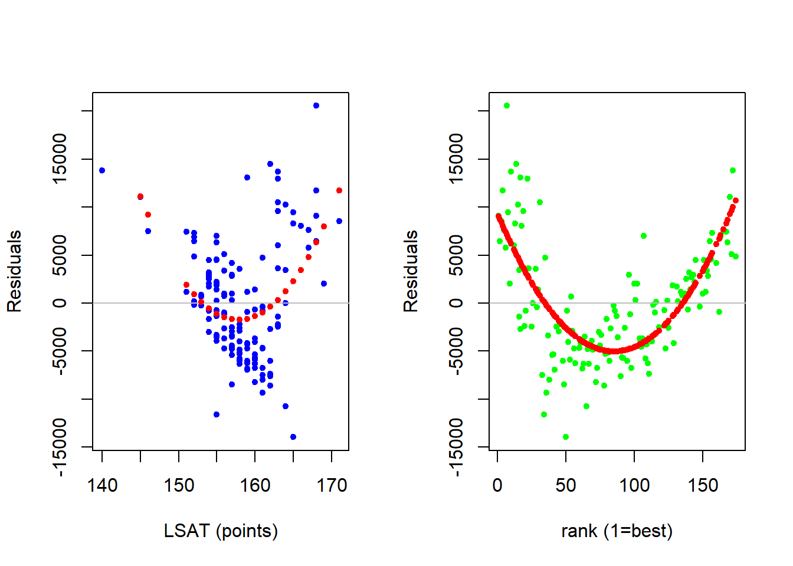
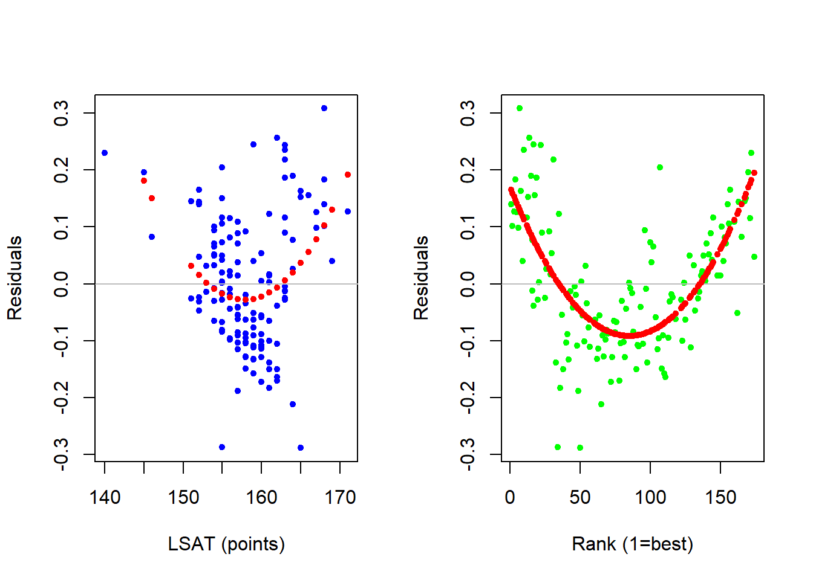
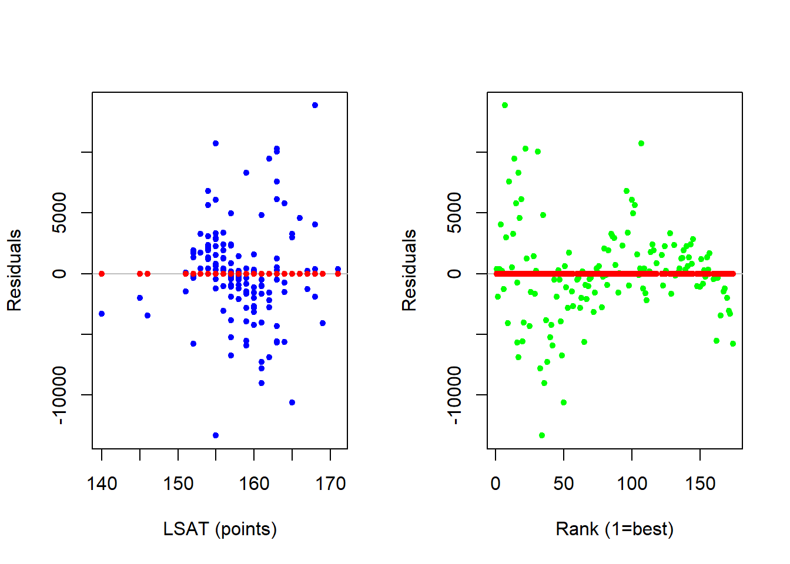
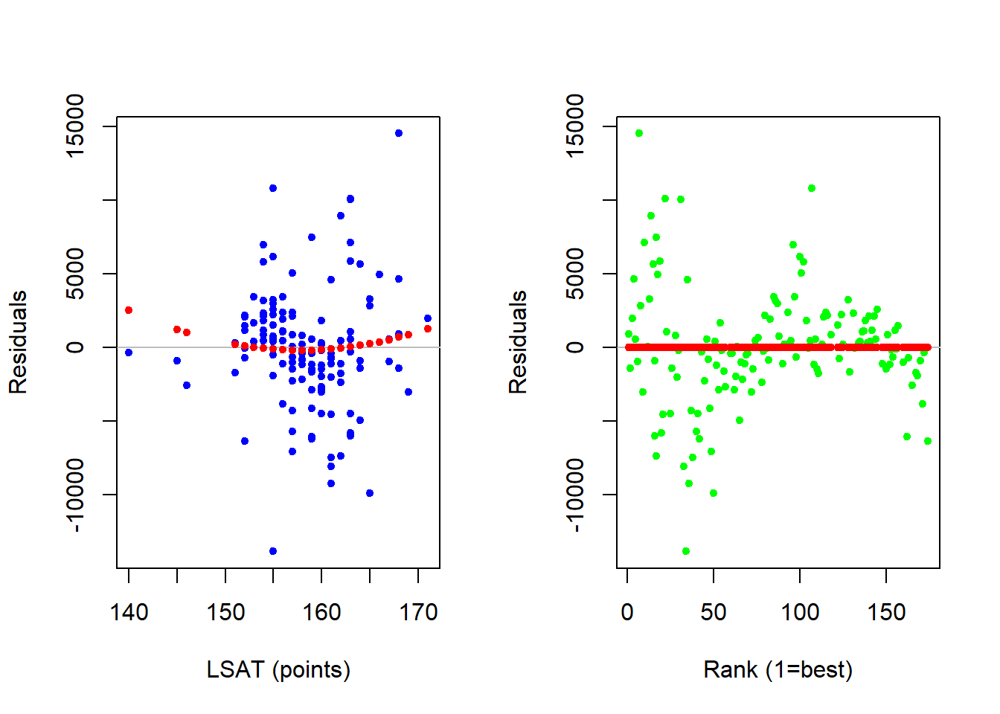

11.7 A Concluding Application
We return once again to our analysis on the median starting salaries of graduating law classes.
\[SALARY_i = \beta_0 + \beta_1 \; LSAT_i + \beta_2 \; RANK_i + \varepsilon_i\]
As this chapter now makes clear, we have thus far assumed that the relationship between salary and student quality (i.e., LSAT) as well as the relationship between salary and school quality (i.e., RANK) are both linear (i.e., having constant slopes). If this is in fact true in the data, then our linear model will capture all there is to capture and the residual term will be filled with nothing but random, unpredictable, garbage. However, if there is a nonlinear relationship in the data, then our linear model will be unable to capture it. This means that the nonlinear relationship will be deemed unpredictable - and it will end up in the residual or garbage can. We can therefore see if our linear model is not throwing away any important (nonlinear) information by digging through our trash.
A Residual Analysis
Verifying that a linear model is indeed adequate amounts to verifying that there is no nonlinear information in our residuals. Consider our first model pertaining to the law student analysis:
library(readxl)
LAW <- read_excel("data/LAW.xlsx")
REG <- lm(SALARY~LSAT+RANK, data = LAW)
summary(REG)##
## Call:
## lm(formula = SALARY ~ LSAT + RANK, data = LAW)
##
## Residuals:
## Min 1Q Median 3Q Max
## -13959.7 -4668.0 -782.7 3541.4 20553.9
##
## Coefficients:
## Estimate Std. Error t value Pr(>|t|)
## (Intercept) -57550.60 26386.36 -2.181 0.0309 *
## LSAT 693.06 160.85 4.309 3.09e-05 ***
## RANK -158.89 15.05 -10.560 < 2e-16 ***
## ---
## Signif. codes: 0 '***' 0.001 '**' 0.01 '*' 0.05 '.' 0.1 ' ' 1
##
## Residual standard error: 6130 on 139 degrees of freedom
## Multiple R-squared: 0.7531, Adjusted R-squared: 0.7495
## F-statistic: 212 on 2 and 139 DF, p-value: < 2.2e-16A residual analysis amounts to looking at the relationship between the residuals and each independent variable to be sure that there are no nonlinear relationships in the garbage can. If there are none, then our linear model is capturing everything that is going on in the data. If there are, then we need to extend our model to bring the nonlinear information out of the garbage can and into the deterministic component of the model.
The figure below (as well as the code) illustrates a basic residual analysis. First, there is a scatterplot where the residuals of the linear model are on the vertical axis while each independent variable takes a turn on the horizontal axis. The values of the residuals are zero on average (by design), but what we are concerned with is if the residuals make up some sort of nonlinear pattern. This nonlinear pattern is captured by running a quadratic regression where the residuals are the dependent variable and each independent variable takes a turn at being the sole independent variable in a quadratic way. The red dots in the figure indicate the average relationship. If this average relationship appears non-linear then our linear model might not be sophisticated enough.
par(mfrow = c(1,2))
plot(LAW$LSAT,residuals(REG),
cex = 1,pch=20,col = "blue",
xlab = "LSAT (points)",
ylab = "Residuals")
abline(h=0,col = "gray")
# Quadratic wrt LSAT
RCHK <- lm(residuals(REG)~ LAW$LSAT +
I(LAW$LSAT^2))
points(LAW$LSAT,fitted(RCHK),
pch = 20, col = "red")
plot(LAW$RANK,residuals(REG),
cex = 1,pch=20,col = "green",
xlab = "rank (1=best)",
ylab = "Residuals")
abline(h=0,col = "gray")
# Quadratic wrt RANK
RCHK <- lm(residuals(REG)~ LAW$RANK +
I(LAW$RANK^2))
points(LAW$RANK,fitted(RCHK),
pch = 20, col = "red")
The residual analysis above suggests that we might have issues with a linear model (i.e., constant slope) assumption with respect to both independent variables. This means that there might be a nonconstant relationship between median starting salary and both student and school quality. Note two things about our residual analysis. First, they are informal at best. If you think you see a pattern, then that is enough for you to explore further. Only a more sophisticated model will allow you to test for significance. Second, once you decide that you need to make your model more sophisticated and add nonlinear relationships - there is no real direction as to which nonlinear transformation you need to take. The best approach is to use your intuition, and then verify.
Log Transformation
The issue with our linear model is that we assumed that there is a constant relationship in dollar-units, but it might be the case that there is a constant relationship in percentage units. In other words, maybe an additional LSAT point won’t increase starting salary by X dollars on average, but it will increase starting salary by X percent on average.
We can examine this model extension by considering a log-lin model.
\[log(SALARY_i) = \beta_0 + \beta_1 \; LSAT_i + \beta_2 \; RANK_i + \varepsilon_i\]
| Estimate | Std. Error | t value | Pr(>|t|) | |
|---|---|---|---|---|
| (Intercept) | 8.862 | 0.5072 | 17.47 | 6.893e-37 |
| LSAT | 0.01266 | 0.003092 | 4.095 | 7.135e-05 |
| RANK | -0.004063 | 0.0002893 | -14.05 | 1.894e-28 |
| Observations | Residual Std. Error | \(R^2\) | Adjusted \(R^2\) |
|---|---|---|---|
| 142 | 0.1178 | 0.8222 | 0.8197 |
We can interpret our log-lin model accordingly:
\[\frac{\%\Delta \widehat{SALARY}}{\Delta LSAT} = \hat{\beta}_1 \times 100\%= 1.27\%\]
Holding rank constant, an additional LSAT point will increase the median starting salary of a graduating class by 1.27 percent on average
\[\frac{\%\Delta \widehat{SALARY}}{\Delta RANK} = \hat{\beta}_2 \times 100\%= -0.41\%\]
Holding LSAT constant, an additional increase in rank will decrease the median starting salary of a law class by -0.41 percent on average
However, before we make use of these interpretations, we need to ensure that the log-lin transformation was in fact the one that removed the nonlinear information from our garbage can. We do this with yet another residual analysis.
par(mfrow = c(1,2))
plot(LAW$LSAT,residuals(REG2),
cex = 1,pch=20,col = "blue",
xlab = "LSAT (points)",
ylab = "Residuals")
abline(h=0,col = "gray")
RCHK <- lm(residuals(REG2)~ LAW$LSAT +
I(LAW$LSAT^2))
points(LAW$LSAT,fitted(RCHK),
pch = 20, col = "red")
plot(LAW$RANK,residuals(REG2),
cex = 1,pch=20,col = "green",
xlab = "Rank (1=best)",
ylab = "Residuals")
abline(h=0,col = "gray")
RCHK <- lm(residuals(REG2)~ LAW$RANK +
I(LAW$RANK^2))
points(LAW$RANK,fitted(RCHK),
pch = 20, col = "red")
The residual analysis indicates that there wasn’t much of an improvement. This means that while a log transformation is useful in many applications, it isn’t doing the job here.
Quadratic Transformation
Let us now pivot away from logs and consider a quadratic transformation for each of our two independent variables.
\[SALARY_i = \beta_0 + \beta_1 \; LSAT_i + \beta_2 \; LSAT_i^2 + \beta_3 \; RANK_i + \beta_4 \; RANK_i^2 + \varepsilon_i\]
| Estimate | Std. Error | t value | Pr(>|t|) | |
|---|---|---|---|---|
| (Intercept) | 338652 | 260461 | 1.3 | 0.1957 |
| LSAT | -3922 | 3336 | -1.176 | 0.2417 |
| I(LSAT^2) | 13.76 | 10.65 | 1.291 | 0.1988 |
| RANK | -505.9 | 36.78 | -13.75 | 1.387e-27 |
| I(RANK^2) | 1.933 | 0.1912 | 10.11 | 2.7e-18 |
| Observations | Residual Std. Error | \(R^2\) | Adjusted \(R^2\) |
|---|---|---|---|
| 142 | 3999 | 0.8964 | 0.8934 |
An interpretation of a quadratic model is a bit more complicated in words because we need to consider an unit-increase in X relative from a starting value of X. For example, the equations for the interpretations are as follows.
\[\frac{\Delta \widehat{SALARY}}{\Delta LSAT} = \beta_1 + 2 \beta_2 \times LSAT = -3922.43 + 2 \times 13.76 \times LSAT\]
\[\frac{\Delta \widehat{SALARY}}{\Delta RANK} = \beta_3 + 2 \beta_4 \times RANK = -505.87 + 2 \times 1.93 \times RANK\]
Note how these two equations require values for either students’ median LSAT score of a school’s rank in order for you to calculate the average change in starting salary if we increased that independent variable by one (holding the other constant).
For example, we can now evaluate the expected increase in median starting salary due to an additional increase in rank (holding LSAT constant) at a particular school rank!
If we started at the top school (\(RANK = 1\)), then we can determine the average change in starting salary (holding LSAT constant) if we were to go one-school down in the ranking (to the 2nd best):
\[\frac{\Delta \widehat{SALARY}}{\Delta RANK} = -505.87 + 2 \times 1.93 \times 1 = -502\]
If we started at the 100th school (\(RANK = 100\)), then we can determine the average change in starting salary (holding LSAT constant) if we were to go one-school down in the ranking (to the 101st best):
\[\frac{\Delta \widehat{SALARY}}{\Delta RANK} = -505.87 + 2 \times 1.93 \times 100 = -119.22\]
Yet again, we need to verify that this model removes the nonlinear information out of our garbage can before we make use of these interpretations.
par(mfrow = c(1,2))
plot(LAW$LSAT,residuals(REG2),
cex = 1,pch=20,col = "blue",
xlab = "LSAT (points)",
ylab = "Residuals")
abline(h=0,col = "gray")
RCHK <- lm(residuals(REG2)~ LAW$LSAT +
I(LAW$LSAT^2))
points(LAW$LSAT,fitted(RCHK),
pch = 20, col = "red")
plot(LAW$RANK,residuals(REG2),
cex = 1,pch=20,col = "green",
xlab = "Rank (1=best)",
ylab = "Residuals")
abline(h=0,col = "gray")
RCHK <- lm(residuals(REG2)~ LAW$RANK +
I(LAW$RANK^2))
points(LAW$RANK,fitted(RCHK),
pch = 20, col = "red")
The new residual analysis indicates that there is no longer any nonlinear information in our garbage can - because it is now captured by our model!!!
Now that we have confirmed that the quadratic transformation of our model sufficiently captures the nonlinear relationships in the data, the last step is to ensure that the relationships are in fact significant in the population. If you examine the p-values for the coefficients in the quadratic model, you should quickly see that both coefficients for the LSAT variable are not significantly different than zero in the population. This suggests that we really do not need to consider a quadratic along this dimension - just along the RANK dimension.
The final regression below estimates a linear relationship with respect to LSAT and a quadratic relationship with respect to RANK. The residual analysis still suggests a potential nonlinear relationship between salary and LSAT, but we extended the model to formally show that this nonlinear relationship is not statistically significant.
| Estimate | Std. Error | t value | Pr(>|t|) | |
|---|---|---|---|---|
| (Intercept) | 3130 | 17819 | 0.1756 | 0.8608 |
| LSAT | 382.9 | 107.6 | 3.558 | 0.0005132 |
| RANK | -534.9 | 29.2 | -18.31 | 9.236e-39 |
| I(RANK^2) | 2.083 | 0.1523 | 13.67 | 1.927e-27 |
| Observations | Residual Std. Error | \(R^2\) | Adjusted \(R^2\) |
|---|---|---|---|
| 142 | 4009 | 0.8951 | 0.8929 |
par(mfrow = c(1,2))
plot(LAW$LSAT,residuals(REG2),
cex = 1,pch=20,col = "blue",
xlab = "LSAT (points)",
ylab = "Residuals")
abline(h=0,col = "gray")
RCHK <- lm(residuals(REG2)~ LAW$LSAT +
I(LAW$LSAT^2))
points(LAW$LSAT,fitted(RCHK),
pch = 20, col = "red")
plot(LAW$RANK,residuals(REG2),
cex = 1,pch=20,col = "green",
xlab = "Rank (1=best)",
ylab = "Residuals")
abline(h=0,col = "gray")
RCHK <- lm(residuals(REG2)~ LAW$RANK +
I(LAW$RANK^2))
points(LAW$RANK,fitted(RCHK),
pch = 20, col = "red")
Reciprocal Transformation
Although we just learned that a quadratic does the trick, it might be more appropriate to consider a relationship that dies out rather than reverses direction. For example, the difference between the first and second school might be big, but the difference between the 90th and 91st school might be zero. This gives rise to the following reciprocal model.
\[SALARY_i = \beta_0 + \beta_1 \; LSAT_i + \beta_2 \; \frac{1}{RANK_i} + \varepsilon_i\]
##
## Call:
## lm(formula = SALARY ~ LSAT + I(1/RANK), data = LAW)
##
## Residuals:
## Min 1Q Median 3Q Max
## -17583.8 -4471.3 -753.5 3645.0 22084.2
##
## Coefficients:
## Estimate Std. Error t value Pr(>|t|)
## (Intercept) -217327.5 24740.2 -8.784 5.25e-15 ***
## LSAT 1612.4 157.1 10.267 < 2e-16 ***
## I(1/RANK) 31844.6 7352.7 4.331 2.82e-05 ***
## ---
## Signif. codes: 0 '***' 0.001 '**' 0.01 '*' 0.05 '.' 0.1 ' ' 1
##
## Residual standard error: 7724 on 139 degrees of freedom
## Multiple R-squared: 0.6079, Adjusted R-squared: 0.6023
## F-statistic: 107.8 on 2 and 139 DF, p-value: < 2.2e-16The coefficient with respect to RANK is significantly different from zero and uses the following interpretation formula.
\[\frac{\Delta \widehat{SALARY}}{\Delta RANK} = -\beta_2 RANK_i^{-2}=\frac{-31844.6} {RANK_i^{2}}\]
When \(RANK = 1\), we can state that the expected decrease in salary when going to a 2nd ranked school (holding LSAT constant) is $31,844.60.
\[\frac{\Delta \widehat{SALARY}}{\Delta RANK} = -31844.6\]
When \(RANK = 100\), we can state that the expected decrease in salary when going to a 101st ranked school (holding LSAT constant) is $3.18. This is clearly much less than the drop from first to second, indicating that the impact of going down in the ranking is diminishing.
\[\frac{\Delta \widehat{SALARY}}{\Delta RANK} =\frac{-31844.6} {100^{2}}=\frac{-31844.6} {10000} = -3.18\]
While one might prefer the intuition of the reciprocal model over the quadratic, one should note that the quadratic model has a higher \(R^2\) and therefore explains more of the variation in the salary variable than our reciprocal model. This is more of a result of the generality of the quadratic (and why you will see it more frequently in empirical work).